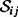

|
| |||||||||||||
|
|
||
The generalized Voronoi diagram (GVD) is the set of points where the distance to the two closest obstacles is the same. Figure 5.9(d) displays an example of the GVD. Path planning is achieved by moving away from the closest point until reaching the GVD, then along the double equidistant GVD to the vicinity of the goal, and then from the GVD to the goal. Since the GVD is defined in terms of distance, one can expect that a robot equipped with range sensors can incrementally construct the GVD in an unknown space. Once the GVD is constructed, the robot has essentially explored the space because the robot can use the GVD to plan paths in the free space with the GVD.
We show that the GVD is a roadmap because the GVD is a type of deformation retract. Deformation retracts are best described by an analogy. Imagine a doughnut-shaped candy: a candy with a hole in the middle of it. As the candy dissolves, eventually a ring remains. This ring captures the topological structure of the candy even though it is significantly smaller than the original. Every point on the ring serves as the center of a corresponding planar disk orthogonal to the ring; each disk is shrunk to a point. In this analogy, the original candy represents the robot's free space and the resulting ring corresponds to a geometric structure called a deformation retract. The function that represents this shrinking process, i.e., the function that maps the filled torus[1] onto a ring, is called a deformation retraction.
First in section 5.2.1, we define the GVD and then in section 5.2.2, we show it has the properties of accessibility, connectivity, and departability. In section 5.2.2, we rely on the fact that the GVD is indeed a deformation retract to assure it has the roadmap properties and in section 5.2.3 we describe in more detail as to how the GVD is a deformation retract. Next, in section 5.2.4, we prove that the GVD is indeed one-dimensional. Here, we review the preimage theorem to assert the dimensionality property of the GVD. Finally, in section 5.2.5, we describe three methods to construct the GVD.
The Voronoi diagram is defined for a set of points called sites [31]. A Voronoi region is the set of points closest to a particular site [31]. The Voronoi diagram is then the set of points equidistant to two sites; it sections off the free space into regions that are closest to a particular site. Points on the Voronoi diagram have two closest sites. In the planar case, the Voronoi diagram is a collection of line segments.
For the purposes of path planning, we can think of the point sites as obstacles, but obstacles are not simple points. Therefore, the definition of a Voronoi region is extended to the generalized Voronoi region, , which is the closure of the set of points closest to . In other words,
| (5.1) |
|
where di (q) is the distance to an obstacle from q, i.e., (chapter 4, equation (4.6)).
The basic building block of the GVD is the set of points equidistant to two sets and , which we term a two-equidistant surface denoted by (di (q) − dj (q)) = 0}. Note that di (q) − dj (q) = 0 isan equivalent way to state di (q) = dj (q) (figure 5.9). A two-equidistant surface pierces obstacles, so we restrict it to the set of points that are both equidistant to and and have and as their closest obstacles. This restricted structure is the two-equidistant face, which could be denoted by .[2] We refine this definition shortly. The union of the two-equidistant faces forms the GVD, i.e.,
This definition of the GVD applies to any dimensional spaces. One can see that the GVD partitions the free space into regions such that points in the interior of one are closer to than to any other obstacle. Points on the GVD have two or more closest obstacles. In the planar case, we term the as GVD edges and they terminate at either meet points, the set of points equidistant to three or more obstacles , or boundary points, the set of points whose distance to the closest obstacle is zero. Boundary points are the endpoints of "spokes" of the GVD.
In , the GVD has the properties of accessibility, connectivity, and departability. In the plane, the GVD is a roadmap because it has these properties and is one-dimensional. We show that the planar GVD is one-dimensional in the next subsection and the properties of accessibility, connectivity, and departability here. The robot achieves accessibility by moving away from the closest obstacle; it performs gradient ascent of distance D to the closest obstacle, i.e.,
until it reaches a point on the GVD.
Equation (5.2) is a first order differential equation implicitly defining the the path  . At any point , the tangent to the path is defined by the gradient of distance to the closest obstacle. The gradient ∇ D(q) points in the direction that maximally increases distance. The tangent of the curve is "set" to the gradient of distance. By constantly following the distance gradient, a path is traced that maximally increases the distance.
. At any point , the tangent to the path is defined by the gradient of distance to the closest obstacle. The gradient ∇ D(q) points in the direction that maximally increases distance. The tangent of the curve is "set" to the gradient of distance. By constantly following the distance gradient, a path is traced that maximally increases the distance.
Inanobstacle-bounded-environment, gradient ascent of D traces a path from any point in the free space to the GVD.
| Proof |
Assume the robot starts at a point q that is not on the GVD. Let be the closest obstacle to q. Hence di (q) = D(q) and dh(q) > di (q) for all h. The robot traces a path where c(0) = q. Since the environment is bounded, continuity of the distance function guarantees that there exists a and a , such that di (c(t)) = dj(c(t)) |
We use the fact that the GVD is a deformation retract to ensure connectivity of the GVD. A deformation retract is the image of a continuous function called a deformation retraction RM such that
We more formally define the deformation retraction in the next section.
For the GVD, the gradient ascent accessibility procedure implicitly defines the deformation retraction without explicitly doing so [340]. In other words, if q is on the GVD, then the image of q is q, i.e., RM(q) = q.If q is in the free space but not in the GVD, then the image q is the q′ in the GVD that is obtained by moving away from the closest point on the closest obstacle until encountering the GVD, i.e., RM(q) = q′.
Connectivity of the GVD is then a consequence of continuity of the RM function. In other words, since RM is continuous, for each connected component of the free space there is a connected component of the GVD. Therefore, there exists a path that connects qstart and qgoal if and only if there exists a path in the GVD that connects q′start and q′goal where q′start = RM(qgoal).
Departability is simply accessibility in reverse. However, there are other ways to achieve departability. It can be shown that all points in free space have at least one point on the GVD within line of sight, i.e.,
This means that if the robot comes within line of sight of the goal, the robot can drive straight toward it. This approach to departability only makes sense if the robot can detect the goal using its on-board sensors.
Before defining the deformation retract, we define a weaker structure called a retract. Fora manifold X, a retraction is a continuous function f : X → A such that A ⊂ X, and f (a) = a for all a ∊ A [410]. The subset A is the retract. Typically, the dimension of A is less than the dimension of X.
The set of deformation retracts is a subset of the set of retracts and hence the GVD is a retract also. However, the properties of a retract are not sufficient to guarantee that the GVD is a roadmap. It is the fact that that GVD is indeed a deformation retract that makes it a roadmap. Essentially, a deformation retract inherits many topological properties from its ambient space, whereas a retract may not. One important property is that the number of "types" of closed paths in the free space is equal to the number of "types" of closed paths in the deformation retract of the free space.
Let's return to the candy example from the beginning of this section. Although a retract can be a ring, it could also be a single point, a two-dimensional disk orthogonal to the ring, etc. We need to enforce additional properties on the retract so as to guarantee that it captures the topology of its free space and is still one-dimensional. Recall from chapter 3, section 3.4.1 that global diffeomorphisms are mappings that relate spaces that are "topologically similar." Diffeomorphic spaces must have same dimension. Now, we consider spaces that are similar, but of different dimensions.
Let f : U → V and g : U → V where U and V are manifolds. A homotopy is a continuous function H : U × [0, 1] → V such that H(x,0) = f (x) and H(x,1) = g(x). An example of H is H(x, t) = (1 − t) f (x) + tg(x). If there exists such a continuous mapping that "deforms" f to g, then f and g are homotopic, and the resulting equivalence relation is denoted f ~ g. We can also say that two paths f and g are path-homotopic, i.e., f ~ g, if they can be continuously deformed into one another. This relation allows for the classification of functions into equivalence classes termed path-homotopy classes and are denoted as
where c is a representative element of the class.
Let A ⊂ X and let f : X → A be a retraction. A deformation retraction is a homotopy H : X × [0, 1] → X such that
H(x, 0) = x
H(x, 1) ∊ A
H(a, t) = a for a ∊ A and t ∊ [0, 1]
In other words, H is a homotopy between a retraction and the identity map[3]. Note that all retractions are not necessarily homotopic to the identity map. The retract is now called a deformation retract.
We use deformation retractions to smoothly deform, without tearing or pasting X onto a lower, preferably one-dimensional subset A of X. So, as t varies from 0 to 1, a point in X continuously moves through X to a point in A. Moreover, a point y in a neighborhood of x also continuously moves through X to a point in A such that H(x, t) and H(y, t) are close to each other as t varies from 0 to 1. Thefore, the deformation retraction preserves many topological properties of the free space. Thus, while a diffeomorphism preserves the structure of two spaces of the same dimension, a deformation retraction preserves the structure of two spaces of different dimension.
One of the key topological properties of deformation retracts is that they preserve the number of homotopically equivalent closed loops from the ambient space. The number of homotopy equivalence classes of closed loops is called the first fundamental group, and is denoted as π1( X, x0) for loops in X passing through x0. Since this is a group, it has a group operator (*) that simply concatenates paths. A set X is simply connected if the fundamental group associated with the set, π1(X, x0), contains only the identity element (e.g., the group only contains one element). If f is a deformation retraction with A as its deformation retract of X, then π1( X, x0)= π1( A, f (x0)). In other words, the ambient space X and the deformation retract A have the same number of homotopically equivalent closed loops.
Deformation retracts have the properties of connectivity, accessibility, and departability. For each connected component of X, A is a connected set because the image of a connected set under a continuous mapping is a connected set [9]. The deformation retraction determines a path from the start to the deformation retract, as well as a path from the goal to the retract. Let H be the deformation retraction and H(x,0) = qstart. The path to the deformation retract is then defined by where H(x, 1) is an element of the deformation retract. Departability is shown in the same manner. Since the deformation retract is connected, there is a path between the retracted start and retracted goal configurations along the deformation retract. Hence, one-dimensional deformation retracts are roadmaps.
The GVD is a retract because the RM (equation (5.2.2)) has been shown to be continuous and maps all points on the GVD to the GVD. Since RM is continuous, the GVD is connected in a connected component of the free space because the image of connected set under a continuous function is a connected set. The GVD is a deformation retract because RM has been shown to be homotopic to the indentity map. Therefore, RM smoothly deforms the free space onto a one-dimensional subset and defines the accessibility and departability criteria. Finally, since the GVD is a deformation retract, the number of closed-loop path equivalent classes in the GVD equals the number of closed-loop path equivalent classes in the free space because RM preserves the cardinality of the first fundamental group. This makes the GVD a concise representation of the free space.
Akey property of a roadmap is that it is one-dimensional. Actually, we show that in the plane, the GVD consists of one-dimensional manifolds. Before we can demonstrate this, we have to take a more careful look at the definition of the GVD. Recall that we are using the distance function di to define the GVD, but this function assumes that the obstacles are convex, which is unrealistic in most situations.
At first, it seems to make sense to decompose nonconvex obstacles into convex pieces. This causes problems because there are many ways to construct such a decomposition, thereby resulting in different representations of the free space. Consider the obstacle in figure 5.10. Both decompositions are valid, but unfortunately they give rise to two different definitions of , the set of points equidistant to two obstacles and . There are infinitely many ways to decompose a nonconvex obstacle and hence the possibility for infinitely many representations.
It would be nice to have a unique representation of the roadmap, so we refine our definition of the GVD. In figure 5.10, note that there are two portions of  : the upper-right portion, which is "between" the two arms of the obstacle and the lower-left portion, which is on the other side of the obstacle. Note that for the portions between the two arms, the gradients to the two closest obstacles are distinct, e.g., ∇di (q1) ≠ ∇dj (q1). However, for the other portions, the gradients line up, e.g., ∇di (q2) = ∇dj(q2) and ∇di(q3) = ∇dj(q3). Eliminating the portion of the two-equidistant surface with nondistinct gradient vectors yields a set termed the two-equidistant surjective surface denoted as
See figure 5.9(b) for an example of a two-equidistant surjective surface defined by a nonconvex obstacle that has been divided into two convex pieces.
This definition of a two-equidistant surjective surface should be salient from a sensor-based perspective. Consider the planar case where distance and gradient vectors can be derived from a laser ranger or a sonar ring which approximates the saturated raw distance function. Recall that the saturated raw distance function corresponds to all of the rays emanating from a single point intersecting as can be seen in figure 5.11.
On the "inside" of the concavity (at q1 in figure 5.11), there are two local minima in the raw distance function, whereas on the outside there is one at q2 and one at q3.In other words, a robot situated on the "outside" of the obstacle cannot determine from its sensor readings how the obstacle was cut. Another perspective is that on the "inside" of the nonconvex obstacle, the robot "sees" two obstacles and on the "outside," it only "sees" one.
From here, the definition of the two-equidistant face is modified to be . So the GVD is the set of points equidistant to two obstacles such that the two obstacles are closest and have unique closest points on them.
We are now ready to show that the GVD is indeed one-dimensional. We do this by first rewriting the equidistant relationship di (q) = dj(q) as di (q) − dj (q) = 0, which in turn can be written as (di − dj)(q) = 0. Intuitively, this one constraint in a two-dimensional space defines a one-dimensional subspace. In other words, equidistance is the preimage of zero under the map . We use this reformulation to demonstrate that in the plane the GVD comprises one-dimensional manifolds by taking recourse to the preimage theorem [173].
Let M and N be manifolds. Let G : M → N ∊ C∞ and n ∊ N be a regular value of G. The set G−1 (n) = {m ∊ M | G(m) = n} is a closed submanifold of M with tangent space given by TmG−1(n) = ker DG(m).IfN is finitely dimensional, then dim(G−1(n)) = dim(M) − dim(N), i.e., dim(G−1(n)) = dim(M) − dim(N ).
The preimage theorem contains a lot of terminology and notation. A regular value is an n where for all m ∊ G−1(n), the differential DG(m) is surjective (e.g., has full rank). See section C.5.5 for a description of the differential. Next, Tm denotes the tangent space at m. So, Tm M is the tangent space at m on the manifold M and TpG−1(n) is the tangent space at p on the manifold G−1 (n), which is a submanifold of M.
A critical point is a point where the differential is not surjective and hence loses rank. (For real-valued functions, it is a point where the first derivative vanishes.) Let Σ(G)be the set of all critical points of G.For all q* ∊ Σ(G), G(q*) are critical values. Finally, all points q ∉ Σ(G) where DG(q) is surjective are termed regular points with G(q)as their corresponding regular values.
To show that the GVD edges are indeed one-dimensional, we use the preimage theorem to show that they are one-dimensional manifolds. First let's see how the preimage theorem is used to create manifolds. Consider the function f (x, y) = x y2 + y2. The differential Df (x, y) = [2x, 2y]. For all f (x, y) = 91, 538, Df (x, y) ≠ 0 and thus the preimage of 91,538 under f forms a one-dimensional manifold.
With the GVD, G = (di − dj), and the set of points equidistant to two obstacles is (di − dj)−1(0). However, for all points in the preimage to be regular, DG must be surjective. In other words, D(di − dj) must not be equal to zero. Since in a Euclidean space, Ddi (q) = (∇di (q))T, this means ∇di (q) cannot be equal to ∇dj (q). However, we are fortunate to have the ∇di (q) ≠ ∇dj(q) condition in the definition of . So, in actuality, the ∇di (q) ≠∇dj(q) enforces the surjective condition for the preimage theorem, hence the term surjective in the two-equidistant surjective surface. So, by the preimage theorem, is one-dimensional in the plane. The set is a submanifold of . Therefore, the GVD comprises a set of one-dimensional manifolds (figure 5.9).
We discuss three methods for constructing the planar GVD: the first uses sensor information allowing the robot to construct the GVD in an unknown space; the second assumes the world has polygonal obstacles in which case we can compute complexity information about the GVD; and the final method assumes that the world is a grid allowing for efficient computation.
Exploring with the GVD is akin to simultaneously generating and exploring a graph that is embedded in the free space. The GVD can be incrementally constructed because it is defined in terms of distance information which is readily provided by range sensors onboard mobile robots. Using such line-of-sight data, the robot initially accesses the GVD and then begins tracing an edge until it encounters a meet point or a boundary point. When the robot encounters a new meet point, it marks off the direction from which it came as explored, and then identifies all new GVD edges that emanate from it. From the meet point, the robot explores a new GVD edge until it detects either another meet point or a boundary point. In the case that it detects another new meet point, the above branching process recursively repeats. If the robot reaches an old meet point, the robot has completed a cycle in the GVD graph and then travels to a meet point with an unexplored edge associated with it. When the robot reaches a boundary node, it simply turns around and returns to a meet point with unexplored GVD edges. When all meet points have no unexplored edges associated with them, exploration is complete.
The robot accesses the GVD by simply moving away from the nearest obstacle until it is equidistant to two obstacles (figure 5.12). Once the robot accesses the GVD, it must incrementally trace the GVD using the same curve tracing technique from chapter 2, section 2.3.3, except G(q) = di (q) −dj (q) whose roots are the set of points where di (q) = dj (q). The tangent is the null space of ∇G(q), which corresponds to a line orthogonal to ∇di (q) −∇dj (q). This is identical to passing a line through the two closest points and taking the vector perpendicular to the line to be the tangent (figure 5.13). A meet point is detected by looking for a sudden change in one of the two closest obstacles.
In a polygonal environment, obstacles have two features, vertices and edges, thereby making equidistance relationships easy to define. The set of points equidistant to two vertices is a line; the set of points equidistant to two edges is a line; and the set of points equidistant to a vertex and an edge is a parabola. Therefore, by breaking down the free space into regions with the appropriate pair of closest features, one can easily build the GVD. In figure 5.14, regions A and C have a pair of edges as their respective closest features, whereas region B has an edge and vertex as its closest obstacle.
In a polygonal environment with n obstacles and N obstacle vertices, the number of GVD edges falls between and 6N + 3n − 3. The number of nodes on the GVD falls between and 4N − n − 2. See [359] for details.
The method presented in chapter 4, section 4.3.2 can be readily adapted to construct the GVD in a discrete grid. Originally, the input for the brushfire method is a grid of zeros corresponding to free space and ones corresponding to an obstacle. The output of the brushfire method is a discrete map where each pixel in the grid has a value equal to the distance to the closest point on the closest obstacle (the closest pixel with avalue of one).
We can view the brushfire method as a wave initially starting at the obstacles and propagating through the free space. As the wave front passes over a pixel, the method assigns a value to the pixel corresponding to how far the wave has traveled. The wave fronts collide at points where the distance to two different obstacles is the same. These are points on the GVD.
The brushfire algorithm can be readily updated to identify the pixels where these collisions occur. Essentially, as the wave propagates, each pixel in the wave front maintains a back pointer to the obstacle pixel from which the wave originated. When the updated brushfire algorithm attempts to assign a "free pixel" with two different back pointers, two wave fronts have collided and the current pixel belongs to the GVD.
[1]A torus is two-dimensional structure, and the filled torus is a three-dimensional version, i.e., the convex hull of a torus embedded in .
[2]Note that we could have written di (q) = dj (q) ≤ dh(q), but the "= dj (q)" is already implied by the .
[3]Sometimes, a deformation retraction is defined as a retraction that is homotopic to the identity map [207] as opposed to the homotopy.
|
|
||
|